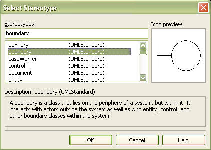
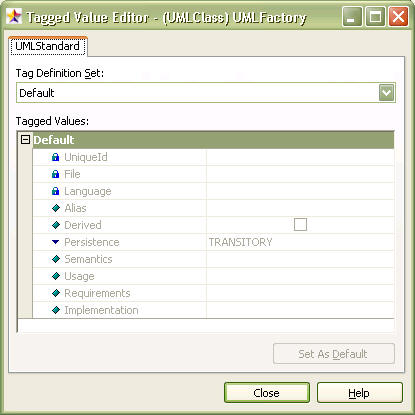
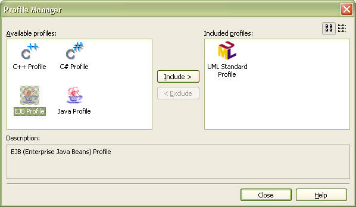
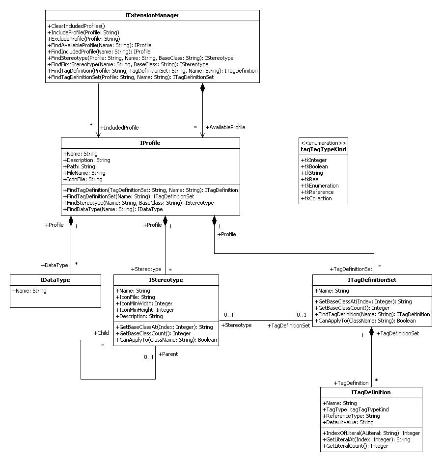

UML is a universal software modeling language that provides an abundance of well-defined modeling concepts and notations to meet all the requirements of general software modeling. Nevertheless, the software modeling/development environment today can take many different forms, and there may be requirements for elements or semantics that do not exist in the UML standard. By default, UML provides concepts for supporting such requirements, and they are called the UML Extension Mechanisms.
UML Extension Mechanisms use Stereotypes, Constraints, Tag Definitions, and Tagged Values to extend the semantics of UML modeling elements or define the UML modeling elements with new semantics.
A stereotype is a modeling element that has definitions for adding new properties and constraints to the standard UML modeling elements. A stereotype can also have definitions to provide new notations for modeling elements. The illustration below is the stereotype selection dialog that appears when clicking on the stereotype selection button in the StarUML™ application. The stereotype selection dialog displays a list of the selectable stereotypes defined in the UML profile that is included in the current project. Stereotypes can also be configured or modified through external API. Details on this will be described later.

Note: Although the UML standard allows each extensible modeling element to have multiple stereotypes, StarUML™ limits each modeling element to only one stereotype.
Tag definition is an element that defines new properties that can be added to certain modeling elements. And definitions of the values of the properties added to elements by tag definitions are called Tagged Values. A tagged value can be a basic datatype value, a reference to other modeling elements, or a collection. The following illustration is the extension property editor screen in the StarUML™ application. The extension property editor displays a list of the tag definition items that belong to the selected modeling element as defined by the UML profile. Tagged values of modeling elements can also be configured or modified through external API. Details on this will be described later.

A constraint adds a specific constraint to a certain modeling element to allow redefinition of the semantics for the selected modeling element. For descriptions of constraints, please refer to the section "ExtCore Elements" in "Chapter 4. Using Open API".
Note: StarUML™ UML profile excludes definitions of constraints.
UML profile is a package of UML extension mechanisms. In other words, it is a collection of stereotypes, constraints, tag definitions, and data types that are required for a certain software domain or development platform.
A UML profile consists of Stereotype, Constraint, Tag Definition, and Data Type elements. Although the UML standard requires a profile to be defined as a package element with the "<<profile>>" stereotype, StarUML™ allows it to be defined as an XML formatted file for easier use.
StarUML profile supports a few of additional extension mechanism with predefined in UML. They are the Diagram Type, Element Prototype, Model Prototype, Palette Extension. These extension mechanism extend semantics of the existing elements or provide regular methods for creating the element and apply it to user interface.
Diagram Type is extension element to define new diagram that has additional semantics based on UML standard diagram. It is useful to define specialized diagram in each phase of design that is data model diagram, robustness analysis diagram, and so on or to apply many kind of diagrams used in various domains to StarUML. Diagram type name is assigned as the "DiagramType" property of the diagram. "DiagramType" property can't be changed as opposed to stereotype. When profile is included in project, it is added in the [Add Diagram] menu and let user be able to create a diagram as the diagram type.
Element prototype defines a sample for element creating which properties are preset. User can create an element with copy of sample by registering element prototype in the palette or using external API.
Model prototype only can be applied to model even if it is similar to element prototype. It is inserted in the [Add Model] as submenu on element prototype in palette. A model element that is copy of the sample can be created by the menu.
Palette extension allows to insert additional palette that appears in the left of main form. Added palette can designate element prototypes or UML standard elements defined in the profile as palette items.
If a UML profile is required for the current project in the StarUML™ application, the profile must be added to the project. This is because no profiles other than "UML Standard Profile" are added automatically. To add profiles in the StarUML™ application, use the profile dialog (illustrated below) that can be executed by clicking the [Model] -> [Profiles…] menu. The "Available Profiles" list on the left shows the list of the profiles currently registered in the user system, and the "Included Profiles" list on the right shows the list of the profiles included in the current project. Adding a profile can be done simply by selecting a profile from the "Available Profiles" list, and clicking the "Include" button in the center. Once a profile is added, the stereotypes and tag definitions defined in the new profile are added to the stereotype selection dialog and extension property editor as shown above. If a profile is no longer required in the current project, simply click the "Exclude" button to remove it from the project. Care should be taken, since excluding a profile results in the removal of all information referenced by the profile in the project. Profiles can also be included or excluded through external API. Details on this will be described later.

A profile document file is defined in the XML format, and the extension name is .prf (PLASTIC Profile File). The contents of the profile are enclosed by the PROFILE tag. There must not be any errors in syntax or contents.
The basic profile document structure is as follows.
<?xml version=”1.0” encoding=”...” ?>
<PROFILE version="...">
<HEADER>
...
</HEADER>
<BODY>
...
</BODY>
</PROFILE>
The HEADER section of a profile document contains general information for the profile, such as the profile name and description.
<HEADER>
<NAME>...</NAME>
<DISPLAYNAME>...</DISPLAYNAME>
<DESCRIPTION>...</DESCRIPTION>
<AUTOINCLUDE>...</AUTOINCLUDE>
</HEADER>
The BODY section of a profile document contains the actual contents of the profile. This section can contain information for Stereotypes, Datatypes, TagDefinitionSets, and addtional extension elements.
<BODY>
<STEREOTYPELIST>
...
</STEREOTYPELIST>
<TAGDEFINITIONSETLIST>
...
</TAGDEFINITIONSETLIST>
<DATATYPELIST>
...
</DATATYPELIST>
<ELEMENTPROTOTYPELIST>
...
</ELEMENTPROTOTYPELIST>
<MODELPROTOTYPELIST>
...
</MODELPROTOTYPELIST>
<PALETTELIST>
...
</PALETTELIST>
<DIAGRAMTYPELIST>
...
</DIAGRAMTYPELIST>
</BODY>
The STEREOTYPE element defines information for stereotype and the inheritance structure.
<STEREOTYPE>
<NAME>...</NAME>
<DESCRIPTION>...</DESCRIPTION>
<BASECLASSES>
<BASECLASS>...</BASECLASS>
...
</BASECLASSES>
<PARENT>...</PARENT>
<RELATEDTAGDEFINITIONSET>...</RELATEDTAGDEFINITIONSET>
<ICON minWidth=”...” minHeight=”...”>...</ICON>
<NOTATION>...</NOTATION>
</STEREOTYPE>
TAGDEFINITIONSET 요소에는 태그요소집합의 기본 정보를 기술하고, TADDEFINITIONLIST 요소 밑에 여러 개의 TAGDEFINITION 요소를 두어 태그정의집합에 포함된 태그정의들을 나열한다.
The TAGDEFINITIONSET element contains basic information on tag definition set, and includes multiple TAGDEFINITION elements under the TADDEFINITIONLIST element to list tag definitions included in the tag definition set.
<TAGDEFINITIONSET>
<NAME>...</NAME>
<BASECLASSES>
<BASECLASS>...</BASECLASS>
...
</BASECLASSES>
<TAGDEFINITIONLIST>
...
</TAGDEFINITIONLIST>
</TAGDEFINITIONSET>
TAGDEFINITIONLIST element: Contains multiple TagDefinitions included in the set. See the TagDefinition section.
<TAGDEFINITION lock=”...”>
<NAME>...</NAME>
<TAGTYPE referenceType=”...”>...</TAGTYPE>
<DEFAULTDATAVALUE>...</DEFAULTDATAVALUE>
<LITERALS>
<LITERAL>...</LITERAL>
....
</LITERALS>
</TAGDEFINITION>
DATATYPE element defines one data type. This element has a sub-element called NAME.
<DATATYPE>
<NAME>...</NAME>
</DATATYPE>
ELEMENTPROTOTYPE element describes information of element prototype that defines the pattern of element creating.
<ELEMENTPROTOTYPE>
<NAME>....</NAME>
<DISPLAYNAME>....</DISPLAYNAME>
<ICON>....</ICON>
<DRAGTYPE>....</DRAGTYPE>
<BASEELEMENT argument=”...”>....</BASEELEMENT>
<STEREOTYPENAME>....</STEREOTYPENAME>
<STEREOTYPEDISPLAY>....</STEREOTYPEDISPLAY>
<SHOWEXTENDEDNOTATION>....</SHOWEXTENDEDNOTATION>
<MODELPROPERTYLIST>
<MODELPROPERTY name=”...”>....</MODELPROPERTY>
....
</MODELPROPERTYLIST>
<VIEWPROPERTYLIST>
<VIEWPROPERTY name=”...”>....</VIEWPROPERTY>
....
</VIEWPROPERTYLIST>
<TAGGEDVALUELIST>
<TAGGEDVALUE profile=”...” tagDefinitionSet=”...” tagDefinition=”...”> </TAGGEDVALUE>
....
</TAGGEDVALUELIST>
</ELEMENTPROTOTYPE>
| Element names | |||
|---|---|---|---|
| Text Note NoteLink Model Subsystem Package Class Interface Enumeration Signal Exception Component ComponentInstance Node NodeInstance Actor UseCase StateMachine ActivityGraph Collaboration |
CollaborationInstanceSet Interaction InteractionInstanceSet CompositeState State ActionState Activity SubactivityState Pseudostate FinalState Partition Swimlane SubmachineState Attribute Operation Parameter TemplateParameter EnumerationLiteral UninterpretedAction SignalEvent |
CallEvent TimeEvent ChangeEvent ClassifierRole Object Transition Dependency Association AssociationClass Generalization Link AssociationRole Stimulus Message Include Extend Realization ObjectFlowState FlowFinalState SystemBoundary |
SignalAcceptState SignalSendState Artifact AttributeLink Port Part Connector CombinedFragment InteractionOperand Frame ExtensionPoint Rectangle Ellipse RoundRect Line Image |
| Element name | Meaning and Value |
|---|---|
| Pseudostate | Decision = 0, InitialState = 1, Synchronization = 2, Junction Point = 3, Choice Point = 4, Deep History = 5, Shallow History = 6 |
| UninterpretedAction | Entry Action = 0, Do Activity = 1, Exit Action = 2 |
| Stimulus | Stimulus with Call Action = 0, Stimulus with Send Action = 1, Stimulus with Return Action = 2, Stimulus with Create Action = 3, Stimulus with Destroy Action = 4, Reverse Stimulus with Call Action = 5, Reverse Stimulus with Send Action = 6, Reverse Stimulus with Return Action = 7, Reverse Stimulus with Create Action = 8, Reverse Stimulus with Destroy Action = 9 |
| Message | Message with Call Action = 0, Message with Send Action = 1, Message with Return Action = 2, Message with Create Action = 3, Message with Destroy Action = 4, Reverse Message with Call Action = 5, Reverse Message with Send Action = 6, Reverse Message with Return Action = 7, Reverse Message with Create Action = 8, Reverse Message with Destroy Action = 9 |
| Association | Assocation = 0, Directed Association = 1, Aggregation = 2, Composition = 3; |
| Swimlane | Vertical Swimlane = 0, Horizontal Swimlane = 1; |
MODELPROTOTYPE element describes information of model prototype that defines the pattern of model creating.
<MODELPROTOTYPE>
<NAME>....</NAME>
<DISPLAYNAME>....</DISPLAYNAME>
<ICON>....</ICON>
<BASEMODEL argument=”...”>....</BASEMODEL>
<STEREOTYPENAME>....</STEREOTYPENAME>
<PROPERTYLIST>
<PROPERTY name=”...”>....</PROPERTY>
....
</PROPERTYLIST>
<TAGGEDVALUELIST>
<TAGGEDVALUE profile=”...” tagDefinitionSet=”...” tagDefinition=”...”> </TAGGEDVALUE>
....
</TAGGEDVALUELIST>
<CONTAINERMODELLIST>
<CONTAINERMODEL type="...." stereotype="...."/>
....
</CONTAINERMODELLIST>
</MODELPROTOTYPE>
PALETTE element describes additional palette and it's items.
<PALETTE>
<NAME>....</NAME>
<DISPLAYNAME>....</DISPLAYNAME>
<PALETTEITEMLIST>
<PALETTEITEM>....</PALETTEITEM>
....
</PALETTEITEMLIST>
</PALETTE>
DIAGRAMTYPE element describes overall information of diagram type.
<DIAGRAMTYPELIST>
<DIAGRAMTYPE>
<NAME>....</NAME>
<DISPLAYNAME>....</DISPLAYNAME>
<BASEDIAGRAM>....</BASEDIAGRAM>
<ICON>....</ICON>
<AVAILABLEPALETTELIST>
<AVAILABLEPALETTE>....</AVAILABLEPALETTE>
....
</AVAILABLEPALETTELIST>
</DIAGRAMTYPE>
</DIAGRAMTYPELIST>
| Diagram names |
|---|
| ClassDiagram UseCaseDiagram SequenceDiagram SequenceRoleDiagram CollaborationDiagram CollaborationRoleDiagram StatechartDiagram ActivityDiagram ComponentDiagram DeploymentDiagram CompositeStructureDiagram |
| Built-in palette names |
|---|
| UseCase Class SequenceRole Sequence CollaborationRole Collaboration Statechart Activity Component Deployment CompositeStructure Annotation |
To make a profile to be recognized automatically by StarUML, must place it in the subdirectory of StarUML module directory(<install-dir>\modules). StarUML searches and reads all profiles in the module directory and registers them at the program automatically when StarUML is initializing. If profile file is invalid or it's extension file name is not .prf, StarUML will not read the profile and ignore it. It is recommended that make a subdirectory in the StarUML module directory and place the profile in there to avoid modules being out of order.
Note: To register profile icon, Make icon file for the profile and place it in the directory of the profile. Icon of the profile is displayed with the name at profiles list in the [Profiles] dialog. If there is no icon file which name is same of the profile's, default icon is registered as icon of the profile.
Note: Delete files of the profile from the StarUML module directory(<install-dir>\modules) not to use the profile any more.
The extension elements defined in the profile can be accessed through StarUML™'s external API. The COM interface related to extension in StarUML™ is organized in the same way as the actual UML extension structure, and is managed through IExtensionManager. It is rare for the developer to directly manage extension element objects. On the contrary, it is much more usual for the developer to obtain stereotypes or tagged values from the actual model elements extended. In this case, the methods provided by the IExtensionModel can be used. For details on the IExtensibleModel interface and modeling elements, see "Chapter 4. Using Open API".
As mentioned earlier, extension elements are not created during the actual modeling process but are definitions of extension structures. Since they should not be modified during the initial loading of a program or a project, most of the properties defined in these interfaces are read-only.
The following interfaces are available for managing extension element objects.
The diagram below illustrates the organization of the COM interface for
StarUML's extension elements.

In order to manage profiles and extension elements, reference to the IExtensionManager interface must be acquired first. IStarUMLApplication provides properties for accessing the ExtensionManager object. The following code is a Jscript example of obtaining reference to IExtensionManager.
var app = new ActiveXObject("StarUML.StarUMLApplication");
var ext = app.ExtensionManager;
IExtensionManager provides methods for including or excluding profiles in/from projects. IncludeProfile() includes the profile entered in the current project, and ExcludeProfile() excludes the profile entered from the current project. The profile entered as the parameter for the methods must be registered in the system. An error occurs if the profile entered is not present or registered in the system. The method usage is as follows.
IExtensionManager.IncludeProfile(Profile: String) IEXtensionManager.ExcludeProfile(Profile: String)
The following is a JScript example of excluding a profile named "StandardProfile" from the current project.
var app = new ActiveXObject("StarUML.StarUMLApplication");
var ext = app.ExtensionManager;
ext.ExcludeProfile("UMLStandard");
The extension objects that constitute a profile can be accessed through the IProfile interface. IProfile provides the following collection access methods for accessing the interfaces of extension objects (IStereotype, ITagDefinitionSet, and IDataType). The Index argument used in GetStereotypeAt(), GetTagDefinitionSetAt(), GetDataType(), etc. must be equal to or less than Count - 1 of the collection.
IProfile.GetStereotypeCount(): Integer IProfile.GetStereotypeAt(Index: Integer): IStereotype IProfile.GetTagDefinitionSetCount(): Integer IProfile.GetTagDefinitionSetAt(Index: Integer): ITagDefinitionSet IProfile.GetDataTypeCount(): Integer IProfile.GetDataTypeAt(Index: Integer): IDataType
The following is a Jscript example of looping the sterotypes defined in the profile.
var app = new ActiveXObject("StarUML.StarUMLApplication");
var ext = app.ExtensionManager;
var prf = ext.FindIncludedProfile("UMLStandard");
if (prf != null) {
var st;
for (i = 0; i <= prf.GetStereotypeCount() - 1; i++) {
st = prf.GetStereotypeAt(i);
// do something...
}
}
The IProfile interface provides methods for searching interfaces of extension elements defined in the profile.
FindTagDefinition(TagDefinitionSet: String, Name: String): ITagDefinition FindTagDefinitionSet(Name: String): ITagDefinitionSet FindStereotype(Name: String, BaseClass: String): IStereotype FindDataType(Name: String): IDataType
The IStereotype interface provides information for stereotypes defined
in the profile. Basic stereotype information such as the name, description, and
icon file can be obtained through the read-only property of the IStereotype
interface. IStereotype includes definitions of methods for recognizing
the UML elements that can be applied with stereotypes: GetBaseClassCount(),
GetBaseClassAt(), CanApplyTo(), etc. The GetBaseClassCount()
and GetBaseClassAt() methods allow names of the UML elements that can be
applied with stereotypes to be obtained. The CanApplyTo() method
indicates whether the UML element received as an argument can be applied with
the current stereotype by returning a Boolean value The BaseClass of a
stereotype can specify not only the UML elements expressible in diagrams, but
also more of the upper-level elements like UMLClassifier. In this case, the
selected stereotype can be applied to all the lower-level elements under the
upper-level elements. For example, suppose UMLClassifier is defined as the
BaseClass, then it works the same as if all lower-level elements like UMLClass,
UMLInterface, UMLUseCase, and UMLActor are defined as the BaseClass. For the
inheritance structure between elements, see Plastic Application Model.
GetStereotype() of IExtensibleModel returns IStereotype
objects from stereotyped models. If the stereotype of a model is not defined in
the profile, a null value is returned. In this case, the StereotypeName
property of IExtensibleModel can be used to obtain the name of the
stereotype.
The following is a JScript example of displaying in the message box the
descriptions of the stereotypes for the currently selected model.
var app = new ActiveXObject("StarUML.StarUMLApplication");
var selMgr = app.SelectionManager;
if (selMgr.GetSelectedModelCount() > 0) {
var selModel = selMgr.GetSelectedModelAt(0);
var st = selModel.GetStereotype();
if (st != null) {
WScript.Echo(st.Description)
}
}
The ITagDefinition interface provides information for tag definitions defined in the profile. ITagDefinition provides the following properties.
| Property | Description |
|---|---|
| Name: String | Name of the tag definition. Tag definition name must be unique within the TagDefinitionSet. |
| TagType: tagTagTypeKind | Type of tag. The following tag types are available.
Different methods are used for obtaining tagged values from models depending on the tag type. IExtensibleModel includes definitions of methods for obtaining tagged values according to each tag type. |
| ReferenceType: String |
Indicates the types of object reference available for definition by tagged values when the TagType is tkReference or tkCollection. For example, setting this to "UMLClass" allows connection of Class type only. If the definition for ReferenceType is omitted in the profile document, "UMLModelElement" is taken as the default value. If TagType is not tkReferece or tkCollection, this property has no effect. |
| DefaultValue: String |
Defines the default value of a tag. If the TagType is tkEnumeration, it is a string value for the enumeration order. If the TagType is tkReference or tkCollection, the default value is set as null and this property has no effect. |
The following is a JScript example of displaying the default value of a tag in the message box.
var app = new ActiveXObject("StarUML.StarUMLApplication");
var ext = app.ExtensionManager;
var tag = ext.FindTagDefinition("UMLStandard", "Default", "Derived");
WScript.Echo(tag.DefaultValue);